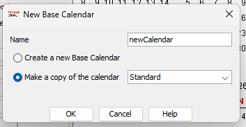
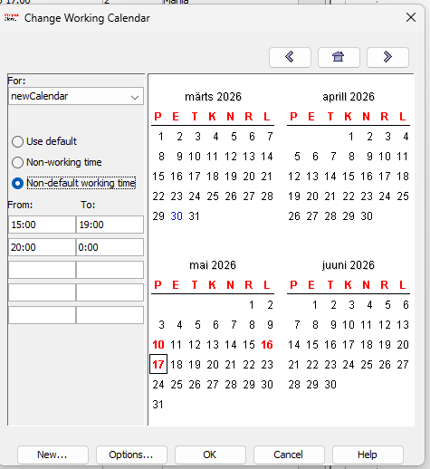
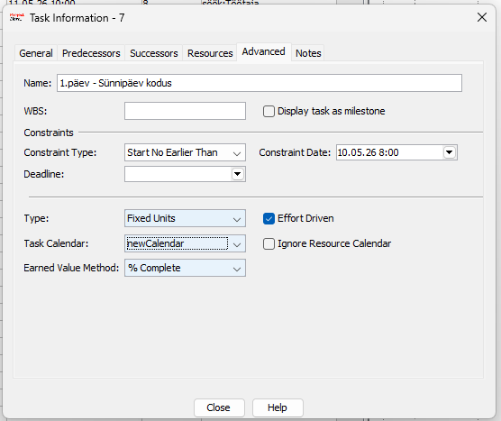
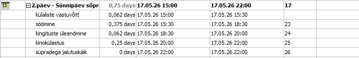

Mis on kalender MS Projectis?
Microsoft Project kasutab kalendreid, et määrata, millal saab tööd teha. Kalender määrab tööpäevad, tööajad ja puhkused. Igale projektile, ülesandele või ressursile saab määrata eraldi kalendri.
Samm 1 — Ava Change Working Time
Mine ülemisse menüüsse ja vali vahekaart Task. Klõpsa nuppu Calendar. See avab kalendrite halduse akna.

Samm 2 — Vaata olemasolevat kalendrit
Avaneb aken Change Working Time. Ülaosas näed rippmenüüd, kust saad valida kalendri. Vaikimisi on kasutusel kalender uus (Project Calendar). Tööajad on näidatud paremal: 08:00–12:00 ja 13:00–17:00. Exceptions vahekaardil on näha lisatud erand algus (15.05–18.05.2026).
Samm 3 — Loo uus kalender
Klõpsa nuppu Create New Calendar. Avaneb dialoog. Vali Make a copy of Standard, et kopeerida olemasolev kalender — nii säilivad vaikimisi seaded ja saad muuta ainult vajalikku. Anna kalendrile uus nimi (nt uusKalendar) ja vajuta OK.

Samm 4 — Lisa erand
Vali loodud kalender uusKalendar. Mine vahekaardile Exceptions ja lisa uus erand: kirjuta nimi, vali algus- ja lõppkuupäev. 25.03.2026 on märgitud mittetööpäevaks.
Samm 5 — Seadista erandi tööajad
Vali kalender newCalendar ja märgi soovitud kuupäevad kalendrist. Vali valik Non-default working time, misjärel aktiveeruvad väljad From ja To. Sisesta uued kellaajad: 15:00–19:00 ja 20:00–00:00.

Samm 6 — Tulemus kalendris
Pärast OK vajutamist on muudetud kuupäevad märgitud erandpäevadena (tumendatud). Kalender arvestab nüüd muutunud tööaegadega just neil päevadel.
Samm 7 — Määra kalender ülesandele
Tee topeltklõps ülesandel Gantti vaates, et avada Task Information. Mine vahekaardile Advanced ja vali Calendar rippmenüüst newCalendar. Nüüd arvestab MS Project selle ülesande ajakava loodud kalendri järgi.

Tulemus — Gantt diagramm
Ülesanne 2.päev – Sünnipäev sõpradega kestab 0,75 päeva ja algab 17.05.2026 kell 15:00. Kõik alamülesanded on järjestatud automaatselt vastavalt määratud kalendrile.
